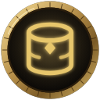

One record of WoW Forever, kept by everyone who plays
Every quest map, loot list and dungeon guide needs to know the game: where creatures stand, what they drop, where each quest starts. NorgannonDB is one shared copy of all of it. Players fill it in as they play, and every add-on reads from it, so a mistake fixed once is fixed everywhere.
Every add-on carries its own copy of the game
WoW Forever moved creatures, changed what bosses drop and reworked professions. Most add-ons still carry game data copied from Classic, and each one keeps its own copy.
When a player spots a mistake, it gets fixed in one add-on, if anyone reports it at all. The others stay wrong. Some things, like many boss drop chances in Forever, were never written down anywhere.
- A quest add-onits own copyFixed here
- A loot add-onits own copyStill wrong
- A map add-onits own copyStill wrong
- A bag add-onits own copyStill wrong



 Yours
Yours
Collect it together. Keep it in one place. Every add-on gets better.
Collect it together
Between us, we walk past every creature and open every chest. The free Collector add-on notes what the game data has wrong or missing while you play, and nothing more.
Keep it in one place
Every find goes into NorgannonDB, one free add-on that holds the game: quests, creatures, objects, items, dungeons and recipes.
Every add-on gets better
Clairvoyance's quest map, Oracle's loot tables and Dimension's item details all read the same data. So can any add-on by any author, not only ours.
From your screen to everyone's, in one update
- 1
You play
The Collector notices a creature where the data says it isn't, or loot it didn't know about.
- 2
You share
When you choose, drop your Collector file on the share page. Nothing leaves your computer before that.
- 3
It's checked
Every find is checked with AI help, and Maro approves each change. Changing something already in the game data needs two different players to see it.
- 4
Everyone has it
The next NorgannonDB update carries the fix, and every add-on that reads it is right for every player.
The rules NorgannonDB keeps
Free and open, always
Free to download and free to build on, under the GPL-3.0. No paid tier, and no add-on is locked out.
Never about people
It records the game, never character names or other players, and only what you choose to share.
Checked before it ships
No find reaches players until Maro approves it, and one player alone can't change what's already in the game data.
Credit where it's due
NorgannonDB starts from the work of Questie and pfQuest, and says so. The players who improve it are named on the leaderboard if they want to be.
Already in NorgannonDB
NorgannonDB 1.4.7, built 2026-11-09.
There's a part for everyone
If you play
Install the Collector and play as usual. Share what it finds now and then.
Help improve itIf you make add-ons
Load NorgannonDB instead of carrying your own copy of the game. The format is written down and stable.
Read the data formatIf you want to talk
Ask questions, suggest what to collect next, and see the new finds come in.
Join the Discord